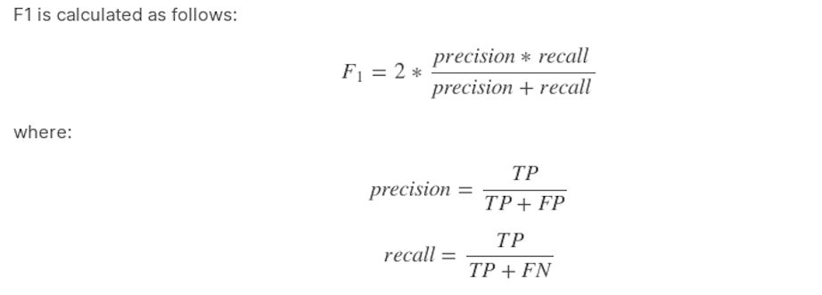
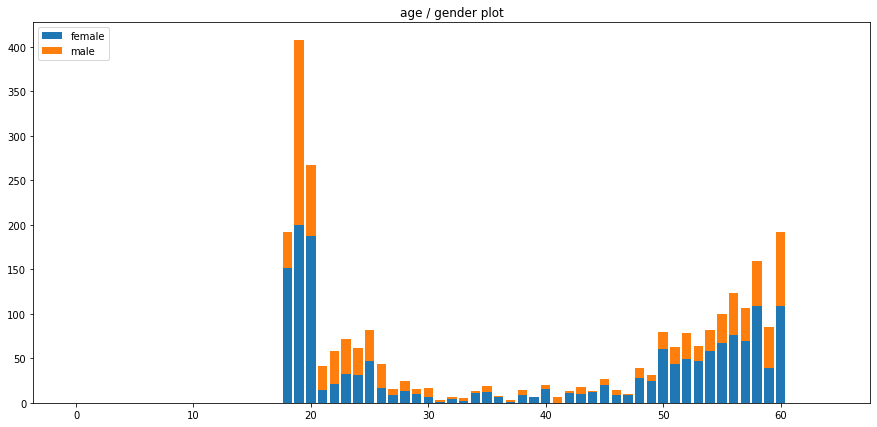
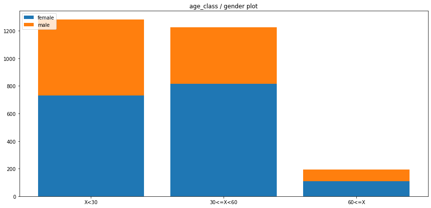
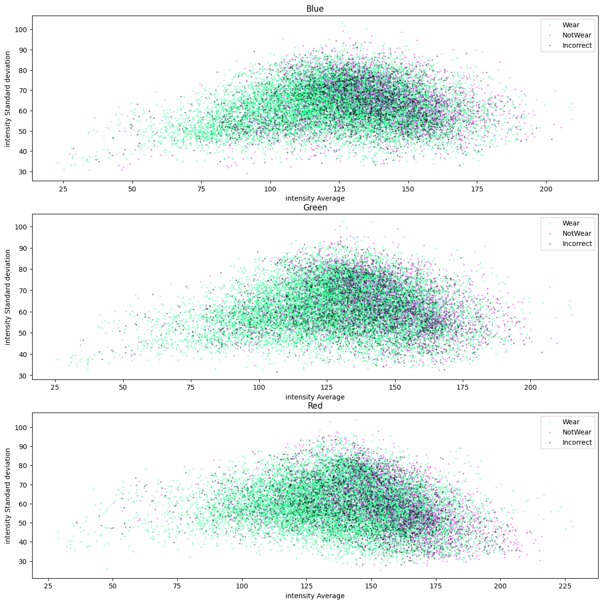
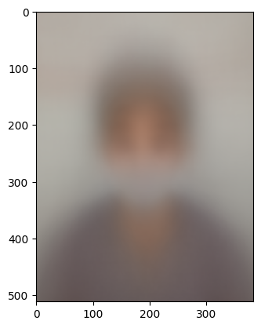

GitHub - 404Vector/Competition.AIStages.MaskWearingStatusClassification: 카메라로 촬영한 사람 얼굴 이미지의 마스크 착용 여부, 성별, 나이를 판단하는 Task
AI Stages / Naver Boost Camp AI Tech 4th COVID-19의 확산으로 우리나라는 물론 전 세계 사람들은 경제적, 생산적인 활동에 많은 제약을 가지게 되었습니다.
https://github.com/404Vector/Competition.AIStages.MaskWearingStatusClassification
==이 대회는 비공개 대회이며, Bootcamp AI Tech 4기 교육의 일환으로 진행되었습니다.==
Team member
- 김형석[https://github.com/404Vector]
- 박시형[https://github.com/sihyeong671]
- 정혁기[https://github.com/22eming]
- 노순빈[https://github.com/Haz25]
- 장국빈[https://github.com/JKbin]
요약
My Contribute
- 팀 내 최대 Code Contributor
- Github Repos 구성 및 Baseline Code 작성
- EDA
- 전체 이미지에 대한 RGB 평균 및 표준편차 시각화
- Class Histogram 시각화
- Class별 평균 이미지, 전체 평균 이미지 시각화
- Model(Multi-head)
- Gender 단일 분류 모델 학습, Accuracy 98%
- Model(Single-head)
- ViT Model 훈련, 팀 내 Best Score 달성
- Focal Loss 추가
- SGD ↔ Adam 성능 비교
Task
- 마스크 상태 Classification, 성별 Classification, 나이 Classification
Evaluation Metric
-
F1 Score

Data
- 전체 사람 명 수 : 4500
- 한사람당사진의개수: 7 (마스크착용5장, 이상하게착용(코스크, 턱스크) 1장, 미착용 1장)
- 이미지 크기 : 512 x 384
- Class Distribution : Total 18 Class(마스크 상태 x 성별 x 나이)
- 마스크 상태 : [Wear, Incorrent, Not Waer]
- 성별 : [Male, Female]
- 나이 : [x<30, 30≤x<60, 60<x ]
개요
Info
COVID-19의 확산으로 우리나라는 물론 전 세계 사람들은 경제적, 생산적인 활동에 많은 제약을 가지게 되었습니다. 우리나라는 COVID-19 확산 방지를 위해 사회적 거리 두기를 단계적으로 시행하는 등의 많은 노력을 하고 있습니다. 과거 높은 사망률을 가진 사스(SARS)나 에볼라(Ebola)와는 달리 COVID-19의 치사율은 오히려 비교적 낮은 편에 속합니다. 그럼에도 불구하고, 이렇게 오랜 기간 동안 우리를 괴롭히고 있는 근본적인 이유는 바로 COVID-19의 강력한 전염력 때문입니다.
감염자의 입, 호흡기로부터 나오는 비말, 침 등으로 인해 다른 사람에게 쉽게 전파가 될 수 있기 때문에 감염 확산 방지를 위해 무엇보다 중요한 것은 모든 사람이 마스크로 코와 입을 가려서 혹시 모를 감염자로부터의 전파 경로를 원천 차단하는 것입니다. 이를 위해 공공 장소에 있는 사람들은 반드시 마스크를 착용해야 할 필요가 있으며, 무엇 보다도 코와 입을 완전히 가릴 수 있도록 올바르게 착용하는 것이 중요합니다. 하지만 넓은 공공장소에서 모든 사람들의 올바른 마스크 착용 상태를 검사하기 위해서는 추가적인 인적자원이 필요할 것입니다.
따라서, 우리는 카메라로 비춰진 사람 얼굴 이미지 만으로 이 사람이 마스크를 쓰고 있는지, 쓰지 않았는지, 정확히 쓴 것이 맞는지 자동으로 가려낼 수 있는 시스템이 필요합니다. 이 시스템이 공공장소 입구에 갖춰져 있다면 적은 인적자원으로도 충분히 검사가 가능할 것입니다.
본론
EDA
-
나이 분포 시각화


-
Image RGB 분포 시각화
-
R - mean: 142.84912575185194, std: 25.110128252411393
G - mean: 133.64627702635642, std: 24.40858433130365
B - mean: 127.87051157552729, std: 24.741864071778853
-
-
최종 Class 분포 시각화

-
Class별 평균 이미지시각화, 전체 평균 이미지 시각화


-
Insight
- 고령자(60<x)에 대한 class imbalance가 심하다
- .RGB 분포는 의외로 매우 크고, Class에 따른 경향성은 보이지 않는다
Data
- Data Pre-processing
- 나이 분류 모델 훈련 시 데이터 샘플링 시도 : 60대 이상의 데이터를 복제하여분포를 맞춤
Test
- Multi-Head Classification(Class별 modeling & training)
-
Mask model
- FocalLoss
- pretrained_ResNext50 → Epoch 10
- F1-score : 0.98
- Best model 찾는 기준을 classification_report를 이용, 여러 F1-score 기준으로 고름
-
Age model
- Data augmentation : 사진에서 보통 사람들이 중앙에 위치하기 때문에center crop을 통해 얼굴에 집중할 수 있도록 함
- 나이를 3개의 카테고리로 나눠서 진행
- resnet101, resnext, regnet_x_16f, efficientnet_b3 → Epoch 10~15
- F1Loss, CrossEntropyLossCutMix 적용했으나 성능 저하를 야기
- SGD, ADAM 사용해서 실험
- Griddropout 사용하여 머리카락 등 여러 일반화 성능이 낮아질 가능성을낮추고자 함
- 나이 class를 여러 단위로 바꿔보면서 비교
-
Gender model
- Pretrained ResNext(224x224)
- No Augmentation, BCE Loss, ADAM, lr : 0.001, Epoch20
- accuracy : 98%
→ 각 모델을 Assemply한 성능이 너무 낮았음.
Age Model의 문제로 추정 되지만 정확히 어떤 이유로 성능이 낮은건지 Trace를 하지 못했음
내부적으로 방법을 찾지 못해 Multi-Head Model을 폐기
-
- Single-Head Classification
- Mask+Age+Gender Model(baseline code)
- Case 1
- Augmentation=‘BaseAugmentation’, batch_size=64,
- criterion=‘cross_entropy’, epochs=5, lr=0.001, lr_decay_step=20,
- model=‘VIT’, optimizer=‘SGD’, resize=[224, 224], valid_batch_size=1000,
- Pretrained=True
- f1 score : 0.7231
- accuracy : 75.0635%
- Case 2
- augmentation=‘BaseAugmentation’, batch_size=64, criterion=‘f1’,
- epochs=10, lr=0.001, lr_decay_step=20, model=‘VIT’, optimizer=‘SGD’,
- resize=[224, 224], valid_batch_size=1000,
- Pretrained=True
- f1 score : 0.5916
- accuracy : 71.6825%
- Case 3
- model : Pretrained ViT(224x224)
- Criterion : CE, batch_size : 64, optimizer : SGD, Scheduler : StepLR,
- Learining rate : 0.001, Dataset : BaseDataset, Augementation - train,
- evaluation 시 다르게 적용
- F1 score : 0.6974
- Accuracy : 75.3810
- Case 4(Best)
- Pretrained ViT(384x384), SGD, Crop((50,50),(334,400))
- ==F1 Score : 0.7417==
- Accuracy : 79.7460%
- ensemble
-
제출 한 결과 값들을 Hard voting→유의미한 결과를 얻지 못함
-
voting에 사용한 모델들의 성능이 너무 낮아서라고 추정
-
- Case 1
- Mask+Age+Gender Model(baseline code)
결론
-
결과
-
Public - f1 score : 0.7417, accuracy : 79.7460 (12위)
-
private - f1 score : 0.7227, accuracy : 78.2857 (14위)
-
-
느낀점
- Team
- 나이,성별,마스크 착용 여부 각각의 task로 나누어 분류하고 결과를 도출하면 더 좋은 성능이 나올 것이라고 기대했으나, 그렇지 못했다.
- 코드 자동화와 실험 로그 추적의 필요성을 느꼈다.
- 실험 전 사전계획에서 변인통제와 독립변수를미리정해야함을 깨달았다.
- 좀 더 체계적이고 지속적으로 결과 및 hyper parameters를 기록해야 되겠다고 느꼈다.
- 전체적으로 데이터 분석을 세밀하게 하지 못했던 점과 데이터 불균형을 해결하지 못해 아쉬웠다.
- 개인
- Gender, Age, Mask를각각분류하는모델을만들고결과를 합치는방식이 좋은결과 를도출할 것이라고 생각했다. 개별적으로 훈련을 진행한 뒤, 잘 예측하는 항목은 고정 하고 잘예측하지 못하는 항목에 집중하면 더 좋을 것이라고 생각했기 때문이다. 하지만 결과는 좋지않았다. 한번에 예측하는 모델이라면 제출해서 정량적으로 판단할 수 있다. 그러나 개별 모델로나누고 이를 합쳐서 제출하면 어떤 모델을 수정해야하는지 알 수 없게 되어버렸다.
- 어떤 계획을 세웠을 때, 실제로 실현이 가능한지 면밀이 검토가 필요하다고 느꼈다. 또한 개별분류 방식에서 한번에 분류하는 방식으로 넘어갔을 때, 기록의 중요성을 느꼈다. 개별 분류방식에서 했던 많은 시행착오를 기록해놓지 않았기 때문에, 0부터 다시 시 작하는 기분이었다.그래서 한번에 분류하는 방식으로 훈련할 때는 지속적으로 기록했다.
- 성별 분류 모델은 기본적으로 성능이 잘 나와서 크게 새로운 것은 없었다. 한번에 분류 하는모델의 경우, 처음으로 ViT를 사용해서 분류해보았다. ViT는 Res-net, Efficient- net등과는구조가 조금 다르다. 그래서 처음에는 어떻게 끝단을 수정해야 할지 알 수 없어서 직접 모델 내부를 분석해 보았다. 결과, timm 라이브러리를 사용하지 않고torchvision에 있는 ViT의 Head를 직접 수정해서 사용할 수 있었다.
- ViT를 사용해 HyperParameter와 ViT Model Type 및Argmentation을 변경해가며 실험했고,이전과 같은 실수를 반복하지 않기 위하여 모두 기록으로 남겼다. 결과, 실험적 으로 성능이올라가는 조건들을 하나씩 찾을 수 있었고, 단일 제출로는 가장 높은 점수 를 얻을 수있었다.
- Team
-
관련 문서